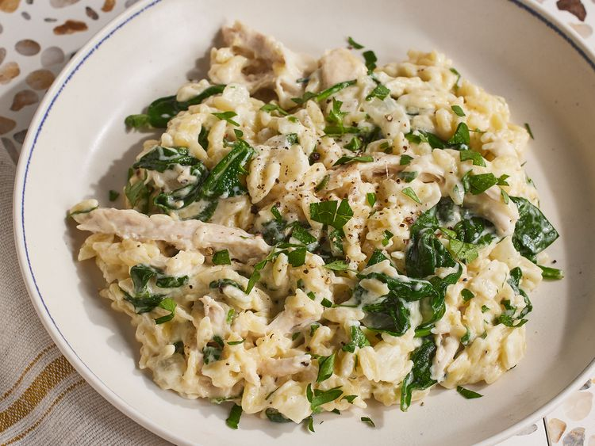

Lemon Chicken Orzo

Description
This one pot chicken orzo dish is wonderfully cheesy and creamy similar to risotto, but you don't need to stir! Lemon gives it brightness and parsley and spinach add color.
Ingredients
- 2 tablespoons extra-virgin olive oil
- 1 cup chopped yellow onion
- 1 tablespoon chopped garlic
- 1 cup (7 oz.) uncooked orzo
- 2 cups heavy cream
- 1 cup chicken broth
- 2 lemons, zested and juiced
- 2 cups shredded cooked chicken
- 3 cups baby spinach
- 1/2 cup shredded fontina cheese
- 1/4 cup freshley grated Parmesan cheese, plus more for garnish
- 2 tablespoons chopped fresh flat-leaf parsley, plus more for garnish
- 3/4 teaspoon black pepper
- 1/2 teaspoon table salt
Steps
- Heat oil in a large Dutch oven over medium. Add onion and cook, stirring occasionally, until softened, 2 to 3 minutes. Add garlic and cook, stirring occasionally, until fragrant, about 30 seconds. Stir in orzo and cook, stirring constantly, until lightly toasted, about 1 minute.
- Stir in heavy cream, broth, about 1 teaspoon lemon zest, and 3 tablespoons lemon juice; bring to a simmer over medium heat, stirring occasionally to prevent the bottom from sticking, about 3 minutes. Reduce heat to medium-low; simmer, stirring constantly, until orzo is tender and mixture is thickened, 8 to 10 minutes.
- Stir in chicken and spinach until spinach wilts, about 1 minute. Remove from heat. Stir in fontina, Parmesan, parsley, pepper, and salt until creamy, about 30 seconds. Serve immediately topped with additional Parmesan and parsley.